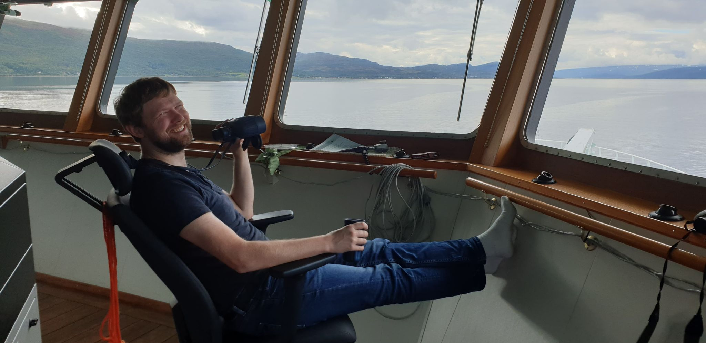
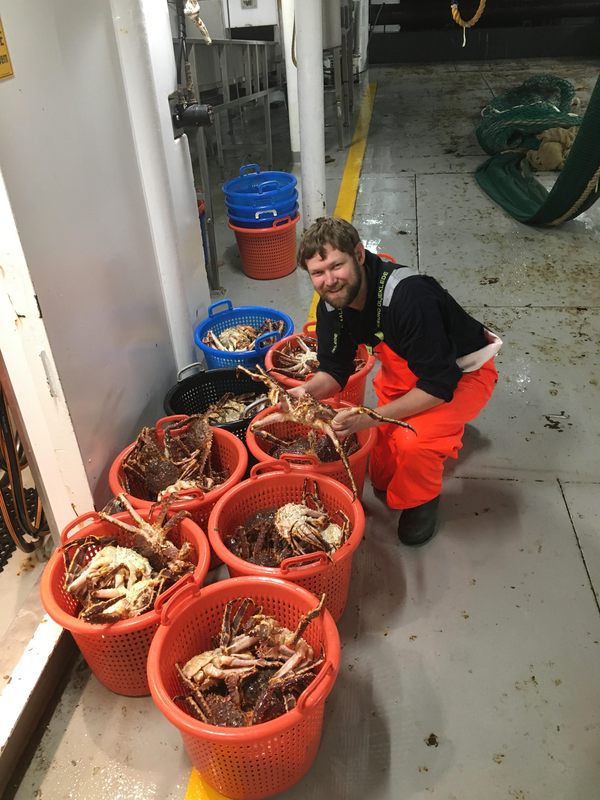
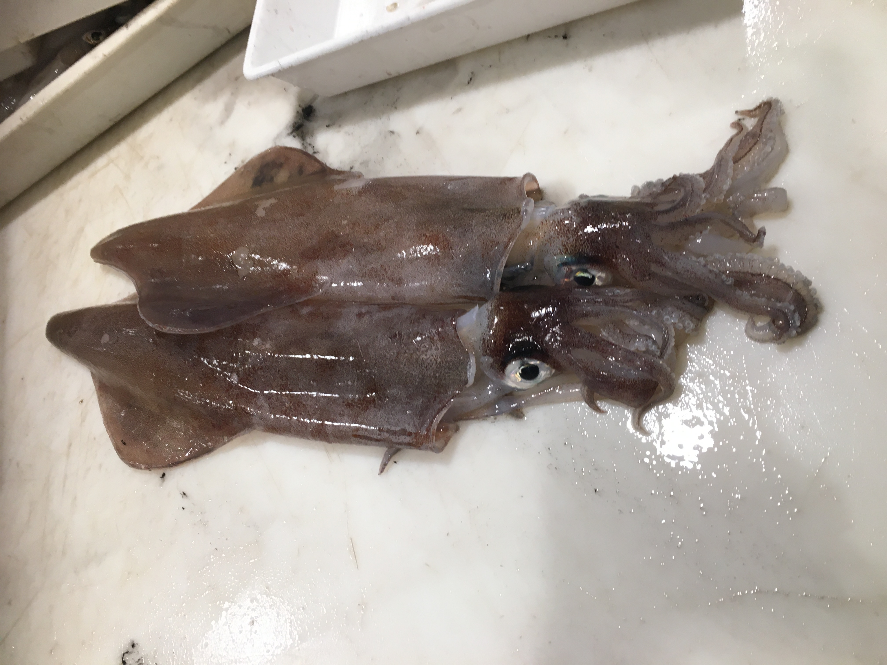
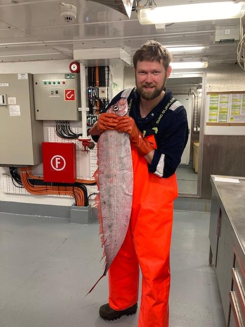
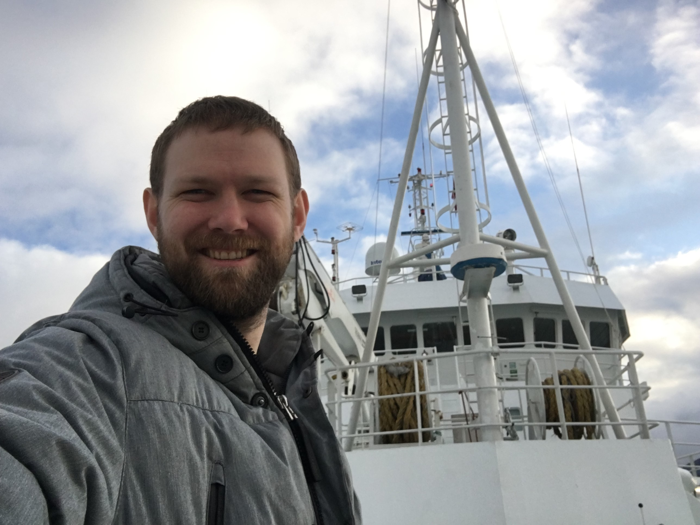
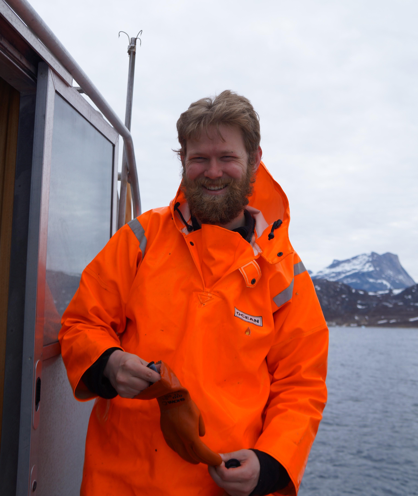

Surveys

Throughout my career I have participated in a number of different surveys, mainly in the temperate to arctic waters of the northern hemisphere. These surveys comprise both from my professional career as a marine biologist and when I was a student at University of Aarhus and University of Tromsø. I love to be on a boat and even long periods of time aboard research vessels doesn’t affect me at all. On the Ecosystem survey I would enjoy a cup of coffee and just enjoy the view of the ocean, and hopefully see a marine mammal or two. At the end of 2020, I will have spent roughly 85 days at sea with various tasks such as water-, sedimentation-, plankton- and genetic sampling, but mainly catch identification and data collection of these.
Norwegian Coastal survey
IMR conducts an annual survey along the norwegian coastline for the assessment of natural resources such as coastal cod, haddock and saithe aswell as helps in the assessment of the red king crab (Paralithdodes camtschaticus). Starting in Kirkenes near the Norwegian-Russian border, the survey goes all the way down south to Bergen. Both fjords and offshore areas have to be surveyed, and as such both Kristine Bonnevie and Johan Hjort is used for this survey. This is one of the longer surveys I have been on, lasting 26 days for me from Kirkenes to Bodø. Only the ecosystemsurvey in the Barents Sea was longer, with 28 days in total. Main task on the survey was bottomtrawl, with pelagic trawls in the most northern fjords to assess the 2020 hatched herring population. Other tasks was water- and sedementation sampling for pollution assessment. I was stationed on Kristine Bonnevie, which meant I helped surveying the inner fjords, with beautiful scenery and the chance to spot pods of orcas on the hunt for Herring schools. The coastal survey was my last survey of 2020, with the rest of my 2020 time working with data analysis, report writing and R package development.
International Bottom Trawl Survey
This survey is carried out twice per year, once in January/February (Q1) and once in July/August (Q3) and I have particpated both in Q1 and Q3 surveys for 2020. My main task onboard was sorting and collection of biological data from bottom trawl catches, however I was also tasked with water sampling from CTDs and plankton collection on Q1. The survey was initially called the International Young Fish survey and focused on the stock assessment of herring in the North Sea. In 1993 the name was changed to the International Bottom Trawl survey and has been broadened in its focus. Today the survey includes oceanographic data collection using CTD and water sampling and biotic data combining acoustics measurements and bottom trawling. The survey is a collaboration between Denmark, Norway, Scotland, England, Sweden, Germany and France. Catches varied widely between areas, though some species remained rather constantly distributed throughout the surveys. The main species of interest were European Plaice, Atlantic cod, Saithe, Haddock, Whitting, Herring and Makrell, since we collected data on size, weight, sex and maturity along with otoliths for age estimation later on. Other species we took length distribution of and total catch weight.
Ecosystem survey in the Barents Sea
My most northern survey was the Ecosystem survey in the Barents Sea. This survey was the most exstensive one I had participated on, with oceanographic data collection, zooplankton trawling, whale watchers and bird watchers, and both pelagic and bottom trawls. I worked mainly with sorting, species identification and data collection from the pelagic and bottom trawls which also included tasks such as genetic and gonad sampling. I also helped with sorting of benthic catches and sometimes spotting of marine mammals from the bridge Due to the commercial importance for both Norway and Russia, the annual ecosystem survey of the Barents sea is a joint operation between the Institute for Marine Research (Norway) and Nikolai M. Knipovich Polar Research Institute of Marine Fisheries and Oceanography (Russia). Due to the size of the survey, one russian and three norwegian research vessels participated to cover the whole of the Barents Sea, where I was onboard the “G. O. Sars” for the whole survey period. This was one of the best surveys I had participated in throughout my career.
Saithe Acoustic Survey
This was my first survey with the Institute for Marine Research and introduced me to the first of IMR’s research vessel, “Kristine Bonnevie”, named after the first norwegian female professor in marine biology. The survey was conducted to determine the the biomass of spawning saithe in the North Sea. Previously I had only been on smaller surveys of 2-4 days, and always in fjordssystems and often with smaller vessels. The North Sea in February provided a completely different experience from my previous more calm watered surveys I had been on in Greenland, Norway and Denmark. The survey gave me a good introduction into the biodiversity of the North Sea, both in pelagic and demersal fish species and benthic invertebrate communities.
Juvenile cod survey in Nuuk fjordsystem
I arrived in Greenland in 2017 to do my master’s thesis in collaboration with the Institute for Natural Resources of Greenland. While working with their otolith archieve, I was fortunate enough to be hired for a 5 day survey which would constitute my first actual survey outside of my univeristy courses. The survey was small both in boat size, since it was conducted on the vessels “Avataq” and “Aage V Jensen II” , and length since the survey was only 5 days long. However, the smaller size of the boat meant we could visit areas, larger vessels could not such as the R/V “Sanne”, and the waiting time between sampling sites meant I could enjoy the beautiful scenery of the Nuuk fjordssystem, spotting animals such as seals, polar foxes, eagles and various species of sea-ducks.